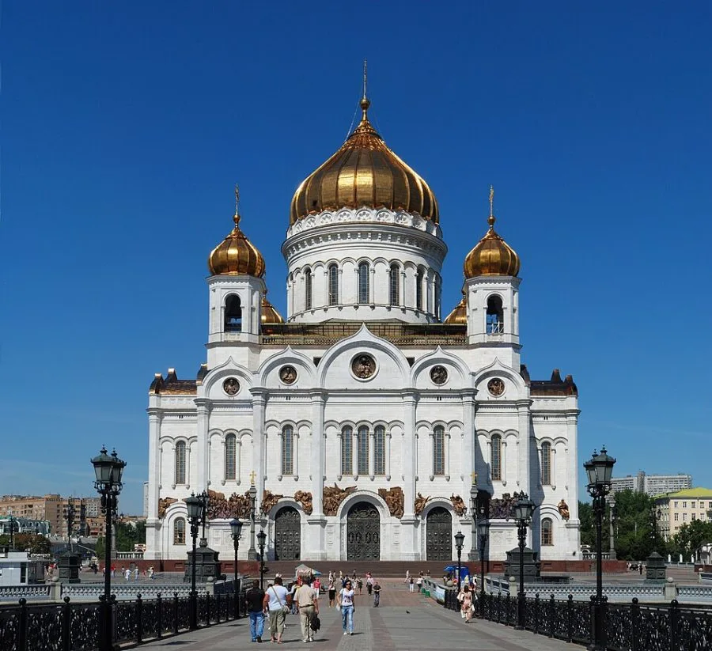
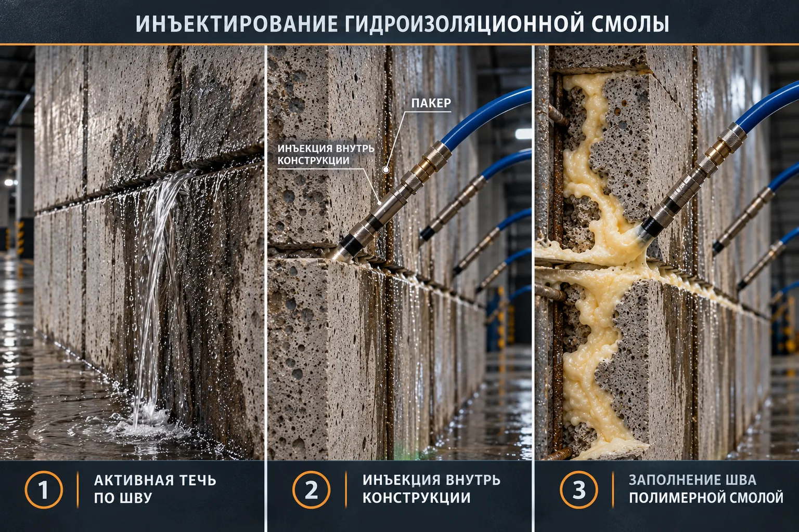
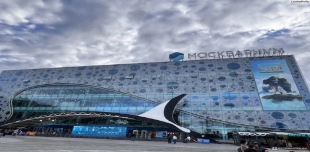
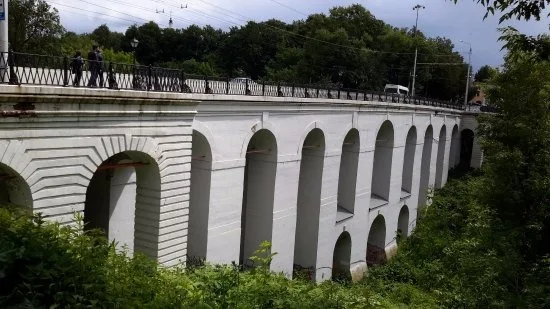
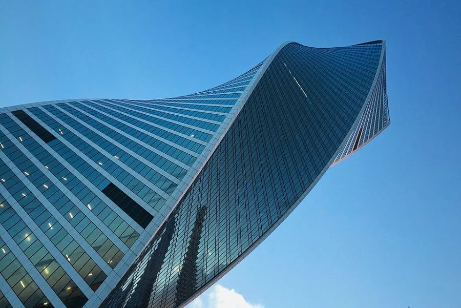
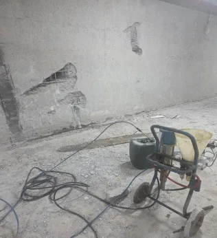
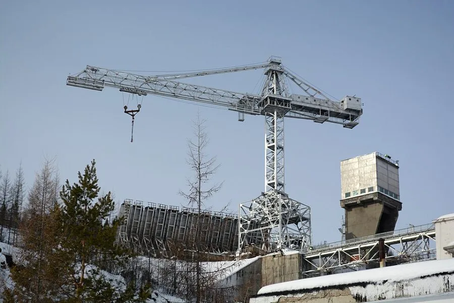
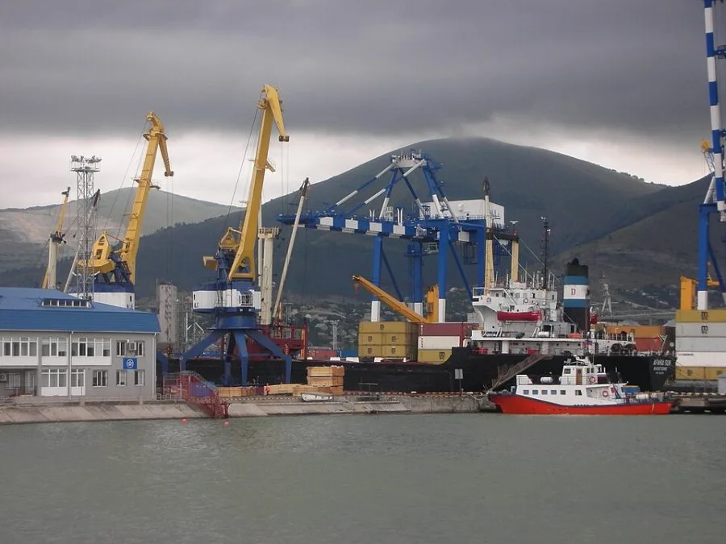
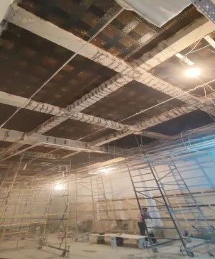
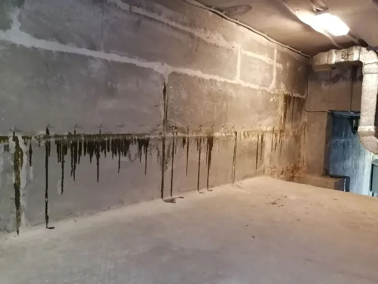

Подземная часть · комплекс работ
Храм Христа Спасителя
Гидроизоляция подземной части и многочисленные работы на комплексе храма.
Останавливаем протечки в швах и трещинах, отсекаем капиллярную влагу, заполняем пустоты и восстанавливаем целостность бетона. Сами разрабатываем решение, выпускаем материалы и выполняем работы.
Москва, регионы России и страны СНГ. Работаем с объектами культурного наследия.
Одна команда отвечает за решение, материал и результат
Мы разрабатываем технические решения, производим специальные материалы и сами выполняем работы. Сотрудничаем с крупнейшими фирмами России, Европы и Азии, поэтому подбираем систему под объект, а не объект под систему.
Плюс защита бетона и ремонт с усилением конструкций — от подвала жилого дома до водоводов ГЭС.
Инъекция в швы и трещины, а при необходимости — за конструкцию в грунт с созданием противофильтрационной завесы.
технология нижеГоризонтальная отсечная гидроизоляция стен и опор: влага из грунта перестаёт подниматься по кладке.
Склеивание трещин в несущем бетоне эпоксидными составами, возвращение конструкции монолитности.
Нагнетание составов в пустоты за обделкой, под плитами и в основании, чтобы вода не находила путь.
Проникающие составы, полимерные и цементные мембраны, антикоррозионная защита для портов, бассейнов и кровель.
Усиление несущих конструкций стадионов, аэропортов и подземных галерей, ремонт гидротехнических сооружений.
Откапывать фундамент не нужно. Через пакеры нагнетаем смолу или гель в тело конструкции, и состав перекрывает путь воде изнутри. Так мы остановили протечки в стыках акрилового стекла и бетона в «Москвариуме», не останавливая работу океанариума.

Выпускаем специальные материалы под инъекционные технологии и поставляем системы, с которыми работаем на объектах сами. Склад в Москве.
Гидрофильная полиуретановая смола для остановки активных протечек в швах и трещинах.
Быстротвердеющий состав для мгновенной ликвидации напорных течей.
Эпоксидная смола для склеивания трещин и восстановления несущего бетона.
Ксайпекс · Mariseal · Hydrobloc
Mariseal Aqua Primer · Maritrans · IC Top
ИнтерЭпокси · Ксайпекс Патч Плаг
ИнтерБлок · Hydrobloc Polygel 530
Цены «от» указаны по категориям. Точная стоимость зависит от объёма — пришлите список, и торговый дом подготовит счёт.
Более 2000 объектов в Москве, регионах России и странах СНГ. Ниже — часть из них.

Гидроизоляция подземной части и многочисленные работы на комплексе храма.
Здание №1 и другие здания. Гидроизоляция и усиление подземной галереи.

Протечки в стыках акрилового стекла и бетона — гидрофильная ПУ-смола. Эпоксидная инъекция под гидроизоляционное покрытие.
Музей Победы, подземные сооружения и фонтаны мемориального комплекса.

Памятник 1780 года. Отсечная гидроизоляция опор моста.

Гидроизоляция эксплуатируемой кровли и вертолётной площадки.

Инъектирование за конструкцию в грунт, усиление несущих конструкций зданий.

Ремонт донных водоводов гидроэлектростанции.

Ремонт, гидроизоляция и антикоррозионная защита конструкций.

Склеивание трещин в несущем бетоне эпоксидной смолой.

Инъекция полиуретановой смолы в стыки между фундаментными блоками.
Пришлите фото протечки или проект. Инженер подберёт технологию и материал.
Обсудить объектЗвонок, письмо или форма на сайте. Приложите фото протечки, проект или ТЗ.
Инженер изучает объект и определяет, откуда и как идёт вода.
Разрабатываем технологию и подбираем материал — свой или партнёрский.
Поставка со склада в Москве, без посредников.
Собственные специалисты выполняют работы и сдают результат по акту.
Не нашли ответ? Позвоните: (495) 223-23-85
Да. Инъекционная гидроизоляция выполняется изнутри помещения: смола или гель нагнетаются через пакеры в шов, трещину или за конструкцию в грунт. Активную напорную течь сначала останавливаем быстротвердеющим составом.
Да. Торговый дом ИнтерАква отгружает материалы со склада на ул. Деловой. Пришлите список или опишите задачу — подскажем, какой состав подойдёт, и выставим счёт.
Да, это одно из наших направлений. Среди объектов — Московский Кремль, Храм Христа Спасителя и Каменный мост в Калуге 1780 года.
Чаще всего это капиллярный подсос влаги из грунта. Его отсекают горизонтальной инъекционной гидроизоляцией в кладке — без разборки стен.
Да. Работаем в Москве, регионах России и странах СНГ — от насосных станций в Сургуте до ГЭС в Якутии и торгового центра в Ереване.
Пришлите фото, проект или список материалов. Ответим в рабочее время: пн–пт, 9:30–18:00.